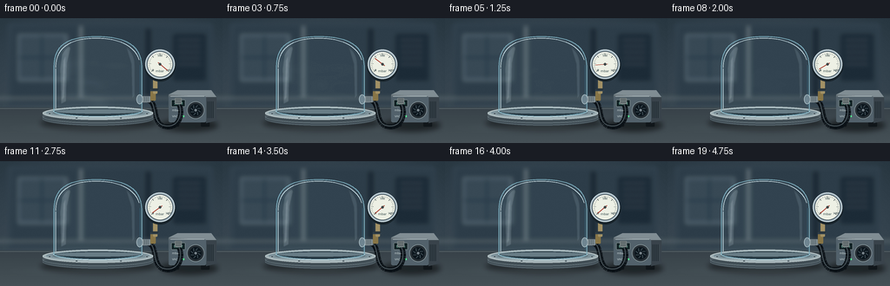
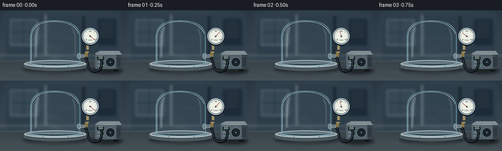

CODING AGENTS AS PIXEL WORLD MODELS
traex/GPT-6.1-Sol · mechanics_0028
点击播放 · 原生 RGB 像素
逐轮保存的候选
回放视频、检查图与代码变化。
每份候选均可单独播放。实际图片检查记录在下方工具轨迹中。
候选 01播放与检查图
点击播放 · 原生 RGB 像素


展开代码变化
--- 上一保存版本
+++ 本次保存版本
@@ -0,0 +1,210 @@
+from pathlib import Path
+import math
+import numpy as np
+from PIL import Image, ImageDraw, ImageFont, ImageFilter
+from artifact_io import save
+
+ROOT = Path(__file__).resolve().parent
+W,H,S=256,144,4
+WW,HH=W*S,H*S
+rng=np.random.default_rng(28)
+yy,xx=np.mgrid[0:HH,0:WW].astype(float); X=xx/S; Y=yy/S
+
+def font(n,mono=False):
+ return ImageFont.truetype('/usr/share/fonts/truetype/dejavu/DejaVuSans'+('Mono' if mono else '')+'.ttf',round(n*S))
+def line(d,pts,fill,width=1): d.line([(round(x*S),round(y*S)) for x,y in pts],fill=fill,width=max(1,round(width*S)))
+def ellipse(d,box,fill,outline=None,width=1): d.ellipse(tuple(round(v*S) for v in box),fill=fill,outline=outline,width=max(1,round(width*S)))
+def rect(d,box,fill,r=0,outline=None,width=1):
+ b=tuple(round(v*S) for v in box)
+ if r: d.rounded_rectangle(b,radius=round(r*S),fill=fill,outline=outline,width=max(1,round(width*S)))
+ else: d.rectangle(b,fill=fill,outline=outline,width=max(1,round(width*S)))
+def text(d,xy,s,size,fill,mono=False,anchor=None): d.text((xy[0]*S,xy[1]*S),s,font=font(size,mono),fill=fill,anchor=anchor)
+def bezier(p0,p1,p2,p3,n=70):
+ t=np.linspace(0,1,n)[:,None]
+ return ((1-t)**3*np.array(p0)+3*(1-t)**2*t*np.array(p1)+3*(1-t)*t*t*np.array(p2)+t**3*np.array(p3)).tolist()
+def poly(d,points,fill): d.polygon([(int(x*S),int(y*S)) for x,y in points],fill=fill)
+def composite_color(im,color,a):
+ mask=Image.fromarray(np.uint8(np.clip(a,0,1)*255))
+ im.paste(Image.new('RGB',(WW,HH),color),(0,0),mask)
+
+# Soft-focus lab environment; it remains stationary during evacuation.
+bg=np.zeros((HH,WW,3),float)
+vign=np.clip(1-((X-122)/180)**2-((Y-72)/145)**2,.1,1)
+for c,v in enumerate((38,52,62)): bg[:,:,c]=v+17*vign+Y*.10
+bg += rng.normal(0,.37,(HH,WW,1))
+back=Image.fromarray(np.uint8(np.clip(bg,0,255)))
+d=ImageDraw.Draw(back)
+rect(d,(9,6,244,101),(52,67,78),3)
+rect(d,(13,9,242,96),(47,62,73),2)
+rect(d,(20,18,78,73),(78,94,104),2)
+rect(d,(23,21,74,69),(57,73,85),1)
+line(d,[(22,45),(75,45)],(40,58,72),2)
+line(d,[(48,20),(48,70)],(40,58,70),2)
+rect(d,(199,18,237,72),(31,45,56),2)
+for j in range(5): line(d,[(204,25+7*j),(231,25+7*j)],(65,78,87),1.4)
+rect(d,(91,9,95,91),(96,109,116))
+rect(d,(168,12,173,90),(28,40,50))
+line(d,[(0,92),(256,92)],(101,111,114),2)
+back=back.filter(ImageFilter.GaussianBlur(2.4*S))
+# Bench surface.
+b=np.array(back).astype(float)
+sel=Y>=103
+for c,v in enumerate((57,67,73)):
+ b[:,:,c]=np.where(sel,v+(Y-103)*.33,b[:,:,c])
+b+=rng.normal(0,.27,(HH,WW,1))
+back=Image.fromarray(np.uint8(np.clip(b,0,255)))
+d=ImageDraw.Draw(back)
+line(d,[(0,104),(256,104)],(103,114,119),.55)
+line(d,[(0,132),(256,129)],(69,79,84),.35)
+
+# Outline of a thick transparent bell jar; no objects inside.
+jarpts=[(62,108),(62,58)]+bezier((62,58),(62,31),(76,21),(111,21))+bezier((111,21),(145,21),(163,31),(163,58))+[(163,108)]+bezier((163,108),(142,115),(80,115),(62,108))
+maskim=Image.new('L',(WW,HH),0); poly(ImageDraw.Draw(maskim),jarpts,255)
+mask=np.array(maskim)/255.
+# Smooth rounded dome and side-wall reflection field.
+edge_dist=np.minimum(np.abs(X-62),np.abs(X-163))
+edge_light=np.exp(-edge_dist**2/2.6)
+glass_alpha=mask*(.06+.13*edge_light)
+# Fixed light softly reflected on the bench.
+
+# Curved vacuum hose from a sealed flange to the pump inlet.
+hose=bezier((168,94),(184,95),(172,124),(192,125))+bezier((192,125),(209,126),(210,106),(206,100))
+
+# Wisps are a visualization of gas density, never solid chamber contents.
+clouds=[]
+for k in range(13):
+ clouds.append((rng.uniform(73,151),rng.uniform(48,101),rng.uniform(5,15),rng.uniform(3,8),rng.uniform(.012,.031),rng.uniform(0,6.28)))
+
+def frame(i):
+ t=i/19
+ im=back.copy(); d=ImageDraw.Draw(im)
+ # Ground contact shadows with broad, soft penumbra.
+ shadow=Image.new('RGBA',(WW,HH)); sd=ImageDraw.Draw(shadow)
+ ellipse(sd,(46,113,181,130),(0,0,0,110))
+ ellipse(sd,(183,116,251,131),(0,0,0,125))
+ shadow=shadow.filter(ImageFilter.GaussianBlur(3*S)); im=Image.alpha_composite(im.convert('RGBA'),shadow).convert('RGB'); d=ImageDraw.Draw(im)
+ # Low reflective patch under the polished vessel.
+ composite_color(im,(154,171,175),.11*np.exp(-((X-112)/62)**2-((Y-126)/5)**2))
+ d=ImageDraw.Draw(im)
+ # Pump feet and cast aluminum body.
+ rect(d,(198,120,206,125),(20,25,29),1)
+ rect(d,(231,120,241,125),(20,25,29),1)
+ poly(d,[(194,88),(234,88),(244,96),(244,119),(194,119)],(99,110,115))
+ poly(d,[(194,88),(204,83),(243,83),(249,91),(237,91)],(125,137,143))
+ poly(d,[(237,91),(249,91),(249,118),(237,121)],(58,68,75))
+ rect(d,(194,90,237,120),(82,96,105),2)
+ line(d,[(196,90),(235,90)],(171,182,185),.65)
+ # Dark circular fan and machined fins.
+ ellipse(d,(215,96,235,116),(40,48,54),(129,143,148),.8)
+ ellipse(d,(218,99,232,113),(16,25,32))
+ for a in range(0,360,45):
+ ar=math.radians(a)
+ line(d,[(225+3*math.cos(ar),106+3*math.sin(ar)),(225+6*math.cos(ar+.4),106+6*math.sin(ar+.4))],(67,81,88),1)
+ ellipse(d,(223.5,104.5,226.5,107.5),(115,126,133))
+ for x in range(239,247,2): line(d,[(x,96),(x,115)],(29,39,47),.65)
+ rect(d,(197,94,213,102),(21,36,39),1,outline=(137,150,151),width=.45)
+ p=1013*math.exp(-7.7*t)
+ val=f'{p:04.0f}' if p>=10 else f'{p:04.1f}'
+ text(d,(205,98.3),val,4.3,(139,224,192),True,'mm')
+ text(d,(198,104),'mbar',3.2,(200,211,211))
+ text(d,(198,111),'VACUUM',3.3,(195,208,210))
+ ellipse(d,(210,112,212,114),(83,224,141))
+ # Heavy flexible line, with one continuous static route.
+ line(d,hose,(14,20,25),6)
+ line(d,[(x-.4,y-.75) for x,y in hose],(61,71,77),1.15)
+ line(d,[(x-.55,y-.9) for x,y in hose],(95,107,111),.3)
+ rect(d,(201,92,209,99),(119,128,129),1)
+ for y in [93,95,97]: line(d,[(202,y),(208,y)],(41,52,57),.6)
+ # Stainless steel platform, elliptical top and turned edge.
+ ellipse(d,(49,107,176,124),(28,35,40))
+ rect(d,(49,108,176,117),(78,90,97))
+ ellipse(d,(49,108,176,124),(67,79,86))
+ for y,co in [(119,(126,143,149)),(120,(46,56,65)),(121,(103,117,124))]:
+ d.arc((49*S,(y-13)*S,176*S,(y+2)*S),0,180,fill=co,width=round(.6*S))
+ ellipse(d,(49,102,176,117),(156,171,175),(212,222,222),.5)
+ ellipse(d,(53,104,172,114),(120,140,148))
+ ellipse(d,(61,104,164,113),(35,50,58))
+ ellipse(d,(64,105,161,110),(100,118,126))
+ # Visible empty chamber floor and see-through refracted backdrop.
+ composite_color(im,(126,171,187),glass_alpha)
+ density=math.exp(-4.8*t)
+ a=np.zeros((HH,WW))
+ for cx,cy,sx,sy,strength,phase in clouds:
+ u=min(1,t*.72)
+ px=cx+(157-cx)*u+2*math.sin(phase+t*9)*(1-u)
+ py=cy+(94-cy)*u+2*math.cos(phase+t*8)*(1-u)
+ a+=strength*np.exp(-((X-px)/(sx*(1-.35*u)))**2-((Y-py)/(sy*(1-.3*u)))**2)
+ # Low-density curved flow converges onto the side vacuum port.
+ for j in range(3):
+ center=69+j*11+6*np.sin((X-75)/20+t*4+j)
+ a+=.009*np.exp(-((Y-center)/3)**2)*np.exp(-((X-111)/43)**2)
+ composite_color(im,(196,214,218),np.clip((a+.021)*mask*density,0,.18))
+ d=ImageDraw.Draw(im)
+ # Thick glass contour: pale outer highlight and cool dark inner edge.
+ line(d,jarpts+[jarpts[0]],(121,167,182),1.05)
+ # Dome highlight follows its surface, rather than a drawn flat lid.
+ arc=bezier((64,57),(64,34),(80,23),(111,23))+bezier((111,23),(137,23),(155,32),(160,48))
+ line(d,arc,(199,220,226),.72)
+ line(d,[(64.1,58),(64.1,104)],(198,222,231),.65)
+ line(d,[(160.9,54),(160.9,102)],(54,90,108),.85)
+ # Large elongated photographic reflections of lab strip lights.
+ refl=Image.new('RGBA',(WW,HH)); rd=ImageDraw.Draw(refl)
+ points=bezier((71,42),(77,32),(81,31),(81,35))+[(77,52),(76,96),(70,99),(69,58)]
+ poly(rd,points,(222,239,244,40))
+ poly(rd,[(73,49),(75,44),(73.7,91),(71.5,94)],(233,247,251,74))
+ points=bezier((145,33),(151,38),(155,44),(155,54))+[(155,89),(152,93),(151,53)]
+ poly(rd,points,(207,232,243,30))
+ refl=refl.filter(ImageFilter.GaussianBlur(.55*S))
+ im=Image.alpha_composite(im.convert('RGBA'),refl).convert('RGB'); d=ImageDraw.Draw(im)
+ # Vacuum seal and thick bottom glass rim.
+ d.arc((61*S,101*S,164*S,114*S),0,180,fill=(190,213,218),width=round(1.2*S))
+ d.arc((62*S,103*S,163*S,113*S),0,180,fill=(76,114,132),width=round(.6*S))
+ # Side bulkhead fitting remains securely fastened throughout.
+ rect(d,(158,90,171,97),(140,155,161),1)
+ ellipse(d,(157,88,164,99),(109,130,141),(201,216,220),.6)
+ rect(d,(164,90,173,97),(122,134,139),1)
+ for x in [166,168,170]: line(d,[(x,90.5),(x,96)],(64,78,87),.55)
+ # Brass valve and gauge branch.
+ rect(d,(173,82,179,95),(132,115,71),1)
+ rect(d,(176,67,181,87),(157,141,100),1)
+ line(d,[(173,83),(183,83)],(51,66,76),2)
+ rect(d,(174,81,182,83),(42,54,61),.6)
+ # Large clearly readable analog vacuum gauge.
+ gx,gy,R=184,53,17
+ ellipse(d,(gx-R-1,gy-R+1,gx+R+1,gy+R+3),(27,38,45))
+ ellipse(d,(gx-R,gy-R,gx+R,gy+R),(156,172,181),(208,222,227),.8)
+ ellipse(d,(gx-R+2,gy-R+2,gx+R-2,gy+R-2),(228,231,220),(53,69,79),.65)
+ for k in range(31):
+ ang=math.radians(140+260*k/30)
+ rad=13.1
+ inn=rad-(2.5 if k%5==0 else 1.3)
+ line(d,[(gx+inn*math.cos(ang),gy+inn*math.sin(ang)),(gx+rad*math.cos(ang),gy+rad*math.sin(ang))],(43,56,62),.45 if k%5==0 else .28)
+ text(d,(176,60),'0',3.4,(31,48,55),anchor='mm')
+ text(d,(184,43),'500',3.1,(31,48,55),anchor='mm')
+ text(d,(194,60),'1000',2.8,(31,48,55),anchor='mm')
+ text(d,(184,61),'mbar',3.8,(48,67,71),anchor='mm')
+ # Starts at atmospheric pressure, ends at near-zero absolute pressure.
+ ang=math.radians(140+260*min(1,p/1013))
+ tip=(gx+11.0*math.cos(ang),gy+11.0*math.sin(ang))
+ tail=(gx-3*math.cos(ang),gy-3*math.sin(ang))
+ line(d,[tail,tip],(158,48,35),.8)
+ ellipse(d,(gx-1.4,gy-1.4,gx+1.4,gy+1.4),(66,72,72))
+ # Small soft lens reflection.
+ gl=Image.new('RGBA',(WW,HH)); gd=ImageDraw.Draw(gl)
+ gd.arc(((gx-14)*S,(gy-14)*S,(gx+14)*S,(gy+14)*S),205,285,fill=(255,255,255,100),width=S)
+ im=Image.alpha_composite(im.convert('RGBA'),gl).convert('RGB')
+ # Two steel hold-down bolts on the base, not inside the chamber.
+ d=ImageDraw.Draw(im)
+ for bx,by in [(57,110),(169,110),(88,115),(139,115)]:
+ ellipse(d,(bx-1.8,by-.85,bx+1.8,by+.85),(56,71,80),(213,225,226),.3)
+ line(d,[(bx-1,by),(bx+1,by)],(29,43,51),.3)
+ # Final restrained photographic grade.
+ im=im.resize((W,H),Image.Resampling.LANCZOS)
+ out=np.asarray(im).astype(float)
+ out=(out-70)*1.06+70
+ return np.uint8(np.clip(out,0,255))
+
+if __name__=='__main__':
+ frames=np.stack([frame(i) for i in range(20)])
+ save(frames,ROOT)
+ print('Saved',frames.shape,'RGB frames to',ROOT)
可观测工具轨迹
实际执行的命令与返回图片。
命令 1exit 0
/bin/bash -lc 'ls -la && cat prompt.txt && cat GENERATION_RULES.md && cat task_spec.json'
命令 2exit 0
/bin/bash -lc "cat artifact_io.py && python - <<'PY' import PIL, numpy print(PIL.__version__, numpy.__version__) PY"
命令 3exit 0
/bin/bash -lc 'fc-list | head -8'
命令 4exit 0
/bin/bash -lc "cat > generate.py <<'PY'
from pathlib import Path
import math
import numpy as np
from PIL import Image, ImageDraw, ImageFont, ImageFilter
from artifact_io import save
ROOT = Path(__file__).resolve().parent
W,H,S=256,144,4
WW,HH=W*S,H*S
rng=np.random.default_rng(28)
yy,xx=np.mgrid[0:HH,0:WW].astype(float); X=xx/S; Y=yy/S
def font(n,mono=False):
return ImageFont.truetype('/usr/share/fonts/truetype/dejavu/DejaVuSans'+('Mono' if mono else '')+'.ttf',round(n*S))
def line(d,pts,fill,width=1): d.line([(round(x*S),round(y*S)) for x,y in pts],fill=fill,width=max(1,round(width*S)))
def ellipse(d,box,fill,outline=None,width=1): d.ellipse(tuple(round(v*S) for v in box),fill=fill,outline=outline,width=max(1,round(width*S)))
def rect(d,box,fill,r=0,outline=None,width=1):
b=tuple(round(v*S) for v in box)
if r: d.rounded_rectangle(b,radius=round(r*S),fill=fill,outline=outline,width=max(1,round(width*S)))
else: d.rectangle(b,fill=fill,outline=outline,width=max(1,round(width*S)))
def text(d,xy,s,size,fill,mono=False,anchor=None): d.text((xy[0]*S,xy[1]*S),s,font=font(size,mono),fill=fill,anchor=anchor)
def bezier(p0,p1,p2,p3,n=70):
t=np.linspace(0,1,n)[:,None]
return ((1-t)**3*np.array(p0)+3*(1-t)**2*t*np.array(p1)+3*(1-t)*t*t*np.array(p2)+t**3*np.array(p3)).tolist()
def poly(d,points,fill): d.polygon([(int(x*S),int(y*S)) for x,y in points],fill=fill)
def composite_color(im,color,a):
mask=Image.fromarray(np.uint8(np.clip(a,0,1)*255))
im.paste(Image.new('RGB',(WW,HH),color),(0,0),mask)
# Soft-focus lab environment; it remains stationary during evacuation.
bg=np.zeros((HH,WW,3),float)
vign=np.clip(1-((X-122)/180)**2-((Y-72)/145)**2,.1,1)
for c,v in enumerate((38,52,62)): bg[:,:,c]=v+17*vign+Y*.10
bg += rng.normal(0,.37,(HH,WW,1))
back=Image.fromarray(np.uint8(np.clip(bg,0,255)))
d=ImageDraw.Draw(back)
rect(d,(9,6,244,101),(52,67,78),3)
rect(d,(13,9,242,96),(47,62,73),2)
rect(d,(20,18,78,73),(78,94,104),2)
rect(d,(23,21,74,69),(57,73,85),1)
line(d,[(22,45),(75,45)],(40,58,72),2)
line(d,[(48,20),(48,70)],(40,58,70),2)
rect(d,(199,18,237,72),(31,45,56),2)
for j in range(5): line(d,[(204,25+7*j),(231,25+7*j)],(65,78,87),1.4)
rect(d,(91,9,95,91),(96,109,116))
rect(d,(168,12,173,90),(28,40,50))
line(d,[(0,92),(256,92)],(101,111,114),2)
back=back.filter(ImageFilter.GaussianBlur(2.4*S))
# Bench surface.
b=np.array(back).astype(float)
sel=Y>=103
for c,v in enumerate((57,67,73)):
b[:,:,c]=np.where(sel,v+(Y-103)*.33,b[:,:,c])
b+=rng.normal(0,.27,(HH,WW,1))
back=Image.fromarray(np.uint8(np.clip(b,0,255)))
d=ImageDraw.Draw(back)
line(d,[(0,104),(256,104)],(103,114,119),.55)
line(d,[(0,132),(256,129)],(69,79,84),.35)
# Outline of a thick transparent bell jar; no objects inside.
jarpts=[(62,108),(62,58)]+bezier((62,58),(62,31),(76,21),(111,21))+bezier((111,21),(145,21),(163,31),(163,58))+[(163,108)]+bezier((163,108),(142,115),(80,115),(62,108))
maskim=Image.new('L',(WW,HH),0); poly(ImageDraw.Draw(maskim),jarpts,255)
mask=np.array(maskim)/255.
# Smooth rounded dome and side-wall reflection field.
edge_dist=np.minimum(np.abs(X-62),np.abs(X-163))
edge_light=np.exp(-edge_dist**2/2.6)
glass_alpha=mask*(.06+.13*edge_light)
# Fixed light softly reflected on the bench.
# Curved vacuum hose from a sealed flange to the pump inlet.
hose=bezier((168,94),(184,95),(172,124),(192,125))+bezier((192,125),(209,126),(210,106),(206,100))
# Wisps are a visualization of gas density, never solid chamber contents.
clouds=[]
for k in range(13):
clouds.append((rng.uniform(73,151),rng.uniform(48,101),rng.uniform(5,15),rng.uniform(3,8),rng.uniform(.012,.031),rng.uniform(0,6.28)))
def frame(i):
t=i/19
im=back.copy(); d=ImageDraw.Draw(im)
# Ground contact shadows with broad, soft penumbra.
shadow=Image.new('RGBA',(WW,HH)); sd=ImageDraw.Draw(shadow)
ellipse(sd,(46,113,181,130),(0,0,0,110))
ellipse(sd,(183,116,251,131),(0,0,0,125))
shadow=shadow.filter(ImageFilter.GaussianBlur(3*S)); im=Image.alpha_composite(im.convert('RGBA'),shadow).convert('RGB'); d=ImageDraw.Draw(im)
# Low reflective patch under the polished vessel.
composite_color(im,(154,171,175),.11*np.exp(-((X-112)/62)**2-((Y-126)/5)**2))
d=ImageDraw.Draw(im)
# Pump feet and cast aluminum body.
rect(d,(198,120,206,125),(20,25,29),1)
rect(d,(231,120,241,125),(20,25,29),1)
poly(d,[(194,88),(234,88),(244,96),(244,119),(194,119)],(99,110,115))
poly(d,[(194,88),(204,83),(243,83),(249,91),(237,91)],(125,137,143))
poly(d,[(237,91),(249,91),(249,118),(237,121)],(58,68,75))
rect(d,(194,90,237,120),(82,96,105),2)
line(d,[(196,90),(235,90)],(171,182,185),.65)
# Dark circular fan and machined fins.
ellipse(d,(215,96,235,116),(40,48,54),(129,143,148),.8)
ellipse(d,(218,99,232,113),(16,25,32))
for a in range(0,360,45):
ar=math.radians(a)
line(d,[(225+3*math.cos(ar),106+3*math.sin(ar)),(225+6*math.cos(ar+.4),106+6*math.sin(ar+.4))],(67,81,88),1)
ellipse(d,(223.5,104.5,226.5,107.5),(115,126,133))
for x in range(239,247,2): line(d,[(x,96),(x,115)],(29,39,47),.65)
rect(d,(197,94,213,102),(21,36,39),1,outline=(137,150,151),width=.45)
p=1013*math.exp(-7.7*t)
val=f'{p:04.0f}' if p>=10 else f'{p:04.1f}'
text(d,(205,98.3),val,4.3,(139,224,192),True,'mm')
text(d,(198,104),'mbar',3.2,(200,211,211))
text(d,(198,111),'VACUUM',3.3,(195,208,210))
ellipse(d,(210,112,212,114),(83,224,141))
# Heavy flexible line, with one continuous static route.
line(d,hose,(14,20,25),6)
line(d,[(x-.4,y-.75) for x,y in hose],(61,71,77),1.15)
line(d,[(x-.55,y-.9) for x,y in hose],(95,107,111),.3)
rect(d,(201,92,209,99),(119,128,129),1)
for y in [93,95,97]: line(d,[(202,y),(208,y)],(41,52,57),.6)
# Stainless steel platform, elliptical top and turned edge.
ellipse(d,(49,107,176,124),(28,35,40))
rect(d,(49,108,176,117),(78,90,97))
ellipse(d,(49,108,176,124),(67,79,86))
for y,co in [(119,(126,143,149)),(120,(46,56,65)),(121,(103,117,124))]:
d.arc((49*S,(y-13)*S,176*S,(y+2)*S),0,180,fill=co,width=round(.6*S))
ellipse(d,(49,102,176,117),(156,171,175),(212,222,222),.5)
ellipse(d,(53,104,172,114),(120,140,148))
ellipse(d,(61,104,164,113),(35,50,58))
ellipse(d,(64,105,161,110),(100,118,126))
# Visible empty chamber floor and see-through refracted backdrop.
composite_color(im,(126,171,187),glass_alpha)
density=math.exp(-4.8*t)
a=np.zeros((HH,WW))
for cx,cy,sx,sy,strength,phase in clouds:
u=min(1,t*.72)
px=cx+(157-cx)*u+2*math.sin(phase+t*9)*(1-u)
py=cy+(94-cy)*u+2*math.cos(phase+t*8)*(1-u)
a+=strength*np.exp(-((X-px)/(sx*(1-.35*u)))**2-((Y-py)/(sy*(1-.3*u)))**2)
# Low-density curved flow converges onto the side vacuum port.
for j in range(3):
center=69+j*11+6*np.sin((X-75)/20+t*4+j)
a+=.009*np.exp(-((Y-center)/3)**2)*np.exp(-((X-111)/43)**2)
composite_color(im,(196,214,218),np.clip((a+.021)*mask*density,0,.18))
d=ImageDraw.Draw(im)
# Thick glass contour: pale outer highlight and cool dark inner edge.
line(d,jarpts+[jarpts[0]],(121,167,182),1.05)
# Dome highlight follows its surface, rather than a drawn flat lid.
arc=bezier((64,57),(64,34),(80,23),(111,23))+bezier((111,23),(137,23),(155,32),(160,48))
line(d,arc,(199,220,226),.72)
line(d,[(64.1,58),(64.1,104)],(198,222,231),.65)
line(d,[(160.9,54),(160.9,102)],(54,90,108),.85)
# Large elongated photographic reflections of lab strip lights.
refl=Image.new('RGBA',(WW,HH)); rd=ImageDraw.Draw(refl)
points=bezier((71,42),(77,32),(81,31),(81,35))+[(77,52),(76,96),(70,99),(69,58)]
poly(rd,points,(222,239,244,40))
poly(rd,[(73,49),(75,44),(73.7,91),(71.5,94)],(233,247,251,74))
points=bezier((145,33),(151,38),(155,44),(155,54))+[(155,89),(152,93),(151,53)]
poly(rd,points,(207,232,243,30))
refl=refl.filter(ImageFilter.GaussianBlur(.55*S))
im=Image.alpha_composite(im.convert('RGBA'),refl).convert('RGB'); d=ImageDraw.Draw(im)
# Vacuum seal and thick bottom glass rim.
d.arc((61*S,101*S,164*S,114*S),0,180,fill=(190,213,218),width=round(1.2*S))
d.arc((62*S,103*S,163*S,113*S),0,180,fill=(76,114,132),width=round(.6*S))
# Side bulkhead fitting remains securely fastened throughout.
rect(d,(158,90,171,97),(140,155,161),1)
ellipse(d,(157,88,164,99),(109,130,141),(201,216,220),.6)
rect(d,(164,90,173,97),(122,134,139),1)
for x in [166,168,170]: line(d,[(x,90.5),(x,96)],(64,78,87),.55)
# Brass valve and gauge branch.
rect(d,(173,82,179,95),(132,115,71),1)
rect(d,(176,67,181,87),(157,141,100),1)
line(d,[(173,83),(183,83)],(51,66,76),2)
rect(d,(174,81,182,83),(42,54,61),.6)
# Large clearly readable analog vacuum gauge.
gx,gy,R=184,53,17
ellipse(d,(gx-R-1,gy-R+1,gx+R+1,gy+R+3),(27,38,45))
ellipse(d,(gx-R,gy-R,gx+R,gy+R),(156,172,181),(208,222,227),.8)
ellipse(d,(gx-R+2,gy-R+2,gx+R-2,gy+R-2),(228,231,220),(53,69,79),.65)
for k in range(31):
ang=math.radians(140+260*k/30)
rad=13.1
inn=rad-(2.5 if k%5==0 else 1.3)
line(d,[(gx+inn*math.cos(ang),gy+inn*math.sin(ang)),(gx+rad*math.cos(ang),gy+rad*math.sin(ang))],(43,56,62),.45 if k%5==0 else .28)
text(d,(176,60),'0',3.4,(31,48,55),anchor='mm')
text(d,(184,43),'500',3.1,(31,48,55),anchor='mm')
text(d,(194,60),'1000',2.8,(31,48,55),anchor='mm')
text(d,(184,61),'mbar',3.8,(48,67,71),anchor='mm')
# Starts at atmospheric pressure, ends at near-zero absolute pressure.
ang=math.radians(140+260*min(1,p/1013))
tip=(gx+11.0*math.cos(ang),gy+11.0*math.sin(ang))
tail=(gx-3*math.cos(ang),gy-3*math.sin(ang))
line(d,[tail,tip],(158,48,35),.8)
ellipse(d,(gx-1.4,gy-1.4,gx+1.4,gy+1.4),(66,72,72))
# Small soft lens reflection.
gl=Image.new('RGBA',(WW,HH)); gd=ImageDraw.Draw(gl)
gd.arc(((gx-14)*S,(gy-14)*S,(gx+14)*S,(gy+14)*S),205,285,fill=(255,255,255,100),width=S)
im=Image.alpha_composite(im.convert('RGBA'),gl).convert('RGB')
# Two steel hold-down bolts on the base, not inside the chamber.
d=ImageDraw.Draw(im)
for bx,by in [(57,110),(169,110),(88,115),(139,115)]:
ellipse(d,(bx-1.8,by-.85,bx+1.8,by+.85),(56,71,80),(213,225,226),.3)
line(d,[(bx-1,by),(bx+1,by)],(29,43,51),.3)
# Final restrained photographic grade.
im=im.resize((W,H),Image.Resampling.LANCZOS)
out=np.asarray(im).astype(float)
out=(out-70)*1.06+70
return np.uint8(np.clip(out,0,255))
if __name__=='__main__':
frames=np.stack([frame(i) for i in range(20)])
save(frames,ROOT)
print('Saved',frames.shape,'RGB frames to',ROOT)
PY
python generate.py"命令 5exit 0
/bin/bash -lc "python - <<'PY'
from pathlib import Path
import numpy as np
from PIL import Image
import shutil, subprocess
root=Path('.')
z=np.load('pixels.npz')['pixels']
assert z.shape==(144,256,20)
assert len(list(Path('frames').glob('*.png')))==20
assert all(Image.open(f'frames/{i:02d}.png').mode=='RGB' for i in range(20))
if shutil.which('ffmpeg'):
subprocess.run(['ffmpeg','-y','-loglevel','error','-framerate','4','-i','frames/%02d.png','-frames:v','20','-c:v','libx264','-crf','16','-pix_fmt','yuv420p','-movflags','+faststart','video.mp4'],check=True)
print('Validated 20 RGB frames, 256 Ã 144, 4 fps; required artifacts present.')
print('\\n'.join(str(x) for x in root.iterdir() if x.is_file()))
PY"保存候选 1 份；完成命令 5 次；可验证图片返回 0 张。原始 API 响应与完整日志保留在本地。